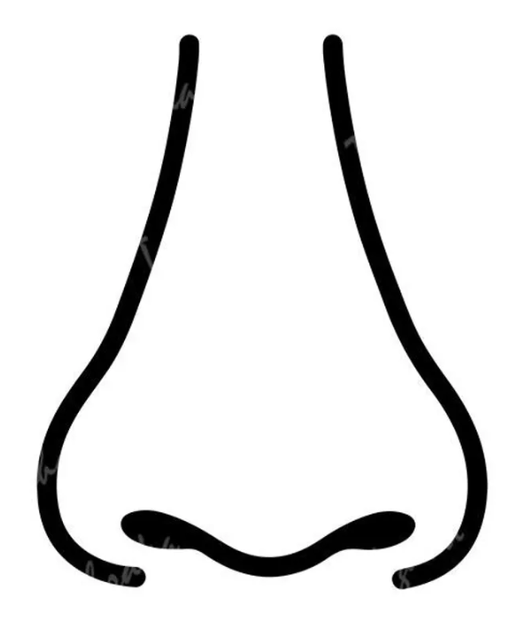

K1 debería ser la K más plana (la de menor potencia) y K2 la más curva. Con los valores actuales K1 > K2 — revisa cuál lectura va en cada campo.
Refracción manifiesta a tratar
Medidas — OD / OI
OD
OI
OD
K1 > K2 — revisa los campos.
OI
K1 > K2 — revisa los campos.
Cilindro K siempre negativo (eje = meridiano plano). K horizontal calculada sobre Kmedia en ambos modos.
Refracción manifiesta — OD / OI
OD
OI
⚙ Ajustar pesos del modelo de exigencia horizontal
Componente cilíndrico = peso_cil × |Cyl|^exponente × cos²(eje) (el exponente controla cómo escala: con 2, un cilindro pequeño apenas influye y uno grande mucho más, sin corte brusco). Subir tope usa ese componente + un peso pequeño de la hipermetropía. Redondear K horizontal usa ese mismo componente cilíndrico (empuja al alza, más espacio horizontal) MENOS la hipermetropía con su propio peso, más alto (empuja a la baja → anillo físicamente más grande, espacio en todos los ejes, no solo el horizontal) — son sesgos opuestos. La subida de tope solo es posible con BB por encima del mínimo configurado: justo ahí se exige un score muy alto (umbral × multiplicador), bajando progresivamente hasta el umbral normal en BB=12mm. Ajusta estos valores con tu casuística; se recalcula al vuelo.
Componente horizontal de la ablación
Ablación y lentículo centrados en la PUPILA (desplazada ~0,25mm a nasal respecto al centro corneal). Diámetro fijo según tipo (miopía ≈8mm, hipermetropía/cilindro ≈9mm); la opacidad indica la profundidad.
—
% horizontal (cos²eje)
—
cil. ponderado (|Cyl|^n)
—
EE hiperópico
—
score exigencia
/
Nomograma
Anillo
Tope
Flap
Estroma
Bisagra
ODOI

/
/
Ablación y lentículo centrados en la PUPILA (desplazada ~0,25mm a nasal respecto al centro corneal). Diámetro fijo según tipo (miopía ≈8mm, hipermetropía/cilindro ≈9mm); la opacidad indica la profundidad.